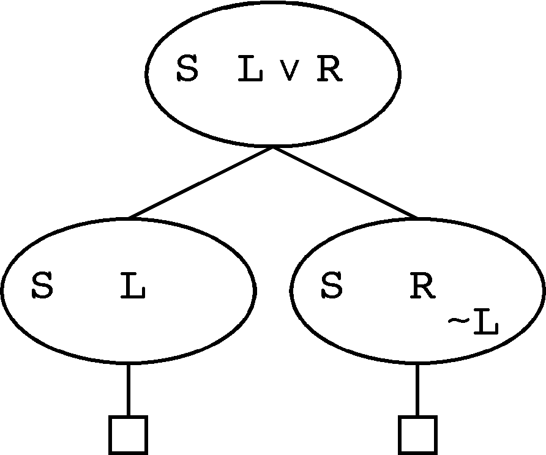

Verifying Explicitly Split Formulae

Inference Rule
- Replaces S ∪ {L ∨ R} by S ∪ {L}
and S ∪ {R}
- When the L (R) subproblem is refuted ...
- Form the anti-kid ~L (~R)
- Can be used in subproblems containing S
- Structural constraints required for soundness
Semantic Verification
- {~L, ~R} |= ~(L ∨ R), with relevance check
- Assures soundness of overall refutation
- Assures variable disjointness of L and R
- Relevance check assures correctness of splitting
- {~L} |= anti-kid